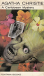
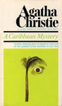
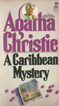
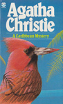

|
||||
1964 - A Caribbean Mystery |
||||
A Caribbean Mystery is a work of detective fiction by Agatha Christie, first published in the UK by the Collins Crime Club on 16 November 1964 and in the United States by Dodd, Mead and Company the following year. It features the detective Miss Marple. Two reviewers at the time the novel was published said that Agatha Christie was returning to the top of her form. A critic writing in 1990 judged this plot to be standard fare for any writer who travels to the Caribbean and needs double duty out of a vacation. |
||||
    |
||||
Screen Versions |
||||
A 1983 US TV movie adaptation starred Helen Hayes as Miss Marple. The New York Times said that Miss Marple has "a carload of suspects" to figure out why her friend was killed, in this film that first aired 22 October 1983. The screenplay was credited to Sue Grafton, later a mystery writer, and Steve Humphrey. Filmed in California. A BBC TV adaptation starring Joan Hickson was shown in 1989 as part of the series Miss Marple. Few changes were made from the novel: the Prescotts and Señora de Caspearo were omitted, Miss Marple holidayed on Barbados rather than the fictional island of "St Honoré" (the name Honoré reappears as the fictional main town in the BBC series Death in Paradise that began airing in 2011), and the blood pressure medication was renamed Tetrauwolfide. Filmed on Barbados. In 2013, the book was adapted for the sixth series of ITV's Agatha Christie's Marple, starring Julia McKenzie as Miss Marple. The characters are much the same as in the novel, and the location is the same. At the end, Tim tries to shoot Molly rather than poison her, but the bullets of the gun have been removed. Like other episodes in the previous series, it includes characters based on real persons. One is fledgling novelist Ian Fleming, who needed a name for his spy hero. The other is ornithologist James Bond, who begins a lecture to his fellow guests by introducing himself as "...Bond, James Bond", which solves Fleming's problem. (Fleming, who was an avid bird-watcher, did take the name from the ornithologist, though they had not met). Filmed in Cape Town. |
||||
 |
 |
 |
||
1983 |
1989 |
2013 |
||
Miss Marple |
- |
Helen Hayes |
Joan Hickson |
Julia McKenzie |
Jason Rafiel |
- |
Barnard Hughes |
Donald Pleasence |
Antony Sher |
Tim Kendall |
- |
Jameson Parker |
Adrian Lukis |
Robert Webb |
Molly Kendall |
- |
Season Hubley |
Sophie Ward |
Charity Wakefield |
Victoria |
- |
Lynne Moody |
Valerie Buchanan |
Pippa Bennett-Warner |
Major Palgrave |
- |
Maurice Evans |
Frank Middlemass |
Oliver Ford Davies |
Edward Hillingdon |
- |
George Innes |
Michael Feast |
Alastair Mackenzie |
Evelyn Hillingdon |
- |
Beth Howland |
Sheila Ruskin |
Hermione Norris |
Lucky Dyson |
- |
Cassie Yates |
Sue Lloyd |
MyAnna Buring |
Greg Dyson |
- |
Stephen Macht |
Robert Swan |
Charles Mesure |
Jackson |
- |
Mike Preston |
Stephen Bent |
Warren Brown |
Dr. Graham |
- |
Brock Peters |
T.P. McKenna |
- |
Captain Daventry |
- |
Zakes Mokae |
- |
Anele Matoti |
Sergeant Weston |
- |
Sam Scarber |
Joseph Mydell |
Joe Vaz |
Ruth Walter |
- |
Swoosie Kurtz |
- |
- |
Esther Walters |
- |
- |
Barbara Barnes |
Montserrat Lombard |
The Minister |
- |
Bernard McDonald |
- |
Daniel Rigby |
Miguel |
- |
Santos Morales |
- |
- |
Hotel Guest |
- |
Cecil Smith |
- |
- |
Aunty Johnson |
- |
- |
Isabelle Lucas |
- |
Napier |
- |
- |
Shaughan Seymour |
- |
Pathologist |
- |
- |
Gregory Munroe |
- |
Raymond West |
- |
- |
T.R. Bowen |
- |
Piers Musgrave |
- |
- |
James Curran |
- |
Errol |
- |
- |
- |
Kingsley Ben-Adir |
Mama Zogbe |
- |
- |
- |
Andrea Dondolo |
Ian Fleming |
- |
- |
- |
Jeremy Crutchley |
James Bond |
- |
- |
- |
Charlie Higson |
Director |
- |
Robert Lewis |
Christopher Petit |
Charles Palmer |
Screenplay |
- |
Sue Grafton & Steve Humphrey |
T.R. Bowen |
Charlie Higson |
 |
||||